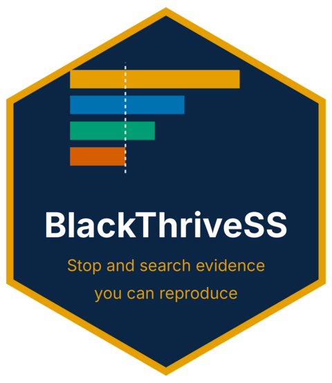
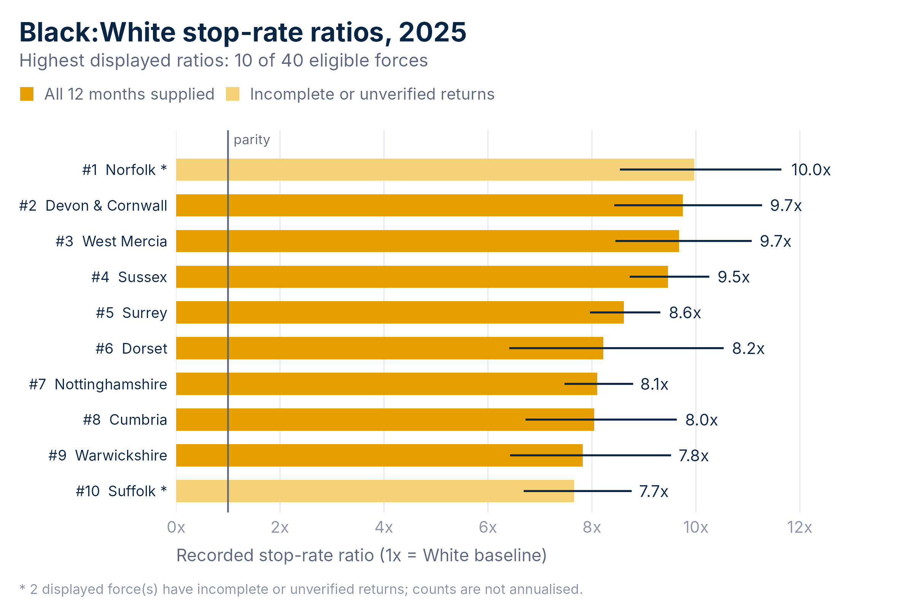
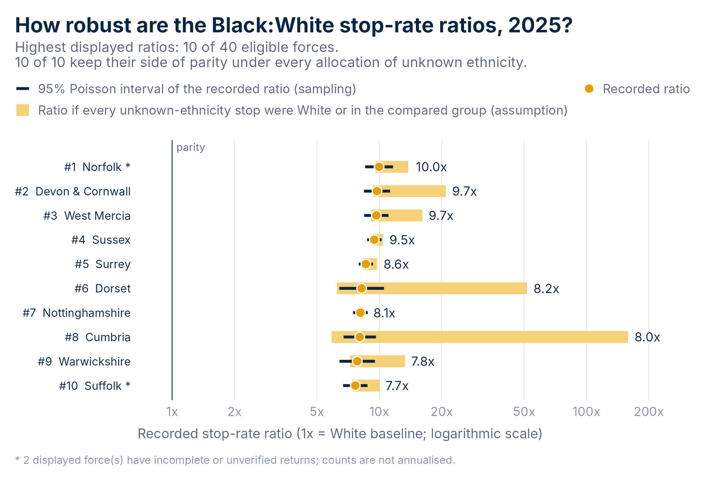
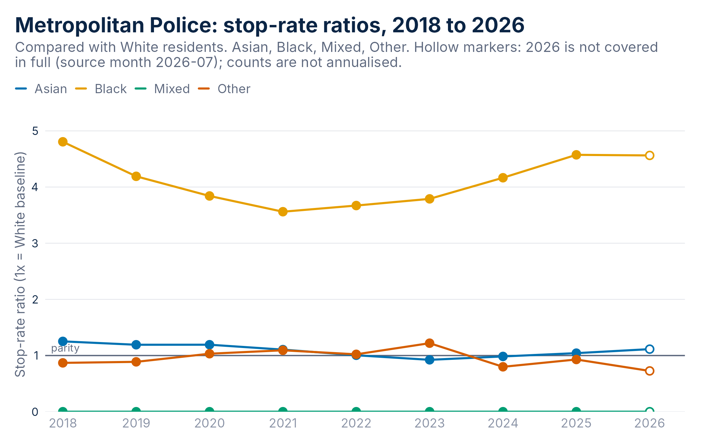
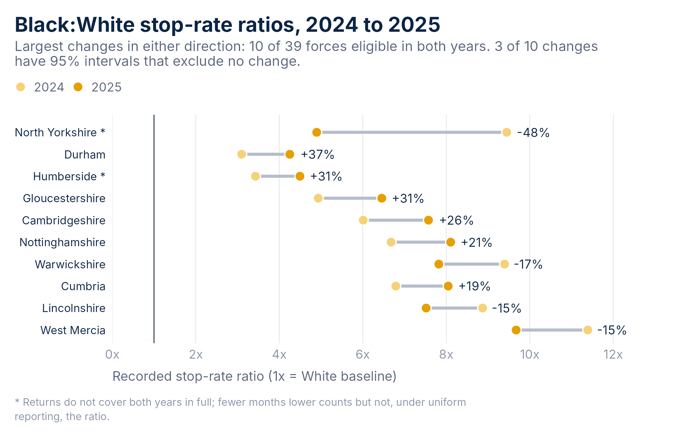

An R package from Black Thrive Global
Stop and search evidence you can reproduce
Fixed, checksummed releases of public Police.uk and Census data for every police force and council in England and Wales, with the charts, robustness checks and briefings that turn them into evidence that stands up to scrutiny.

See it








Install
BlackThriveSS is not on CRAN yet. Install the current release from GitHub with R 4.1 or newer:
install.packages("remotes")
remotes::install_github("BlackThrive/BlackThriveSS")The package contains no compiled code and runs offline after installation. Briefings in HTML and Word need Pandoc, which RStudio and Positron include; PDF briefings also need a LaTeX installation such as TinyTeX.
Quick start
library(BlackThriveSS)
x <- btg_get_data("force_disparity", years = 2025) # the fixed 2025 Black:White comparison
p <- btg_plot_disparity(x, n = 10) # the dashboard's ranking chart
btg_figure_data(p) # the table behind it
btg_sensitivity(x) # bounds under unknown ethnicity
btg_report(force = "metropolitan", file = "metropolitan-2025.docx") # a Word briefingThree guides take it from there: reproduce and validate a chart, test how robust a comparison is and brief a force or council. The function reference documents every call.
Who it is for
Researchers
Tidy data frames with provenance, documented calculations behind every number, and views and exports that let someone else reproduce a result exactly.
Policy and scrutiny
One call writes the evidence for an area as careful plain statements, with the methods and their limits attached, ready for a scrutiny panel or a consultation response.
Community organisations
Charts with your force or council highlighted, a glossary with one definition per term, and a link that opens the same view on the dashboard website.
Policy and scrutiny
One call writes the evidence for an area as careful plain statements, with the methods and their limits attached, ready for a scrutiny panel or a consultation response.
Community organisations
Charts with your force or council highlighted, a glossary with one definition per term, and a link that opens the same view on the dashboard website.
Read the numbers with care
The ratios compare recorded stops with Census 2021 resident populations. They are descriptive event rates, not the probability that a person will be stopped, and they do not on their own establish discrimination. Officer-defined ethnicity differs from Census self-reported ethnicity, the aggregate cannot separate vehicle-only searches, and some forces supply incomplete monthly returns, which the package marks rather than hides. The glossary, the robustness guide and every dataset’s metadata set out these limits.
Cite it
citation("BlackThriveSS") # the package
btg_citation(x) # the data release behind an objectCode: MIT, Black Thrive Global. Data: Police.uk stop and search records and Office for National Statistics Census 2021 populations, which contain public sector information licensed under the Open Government Licence v3.0.